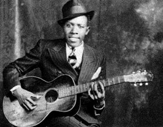

Robert Johnson

Полное собрание текстов
Ноты

- Kindhearted Woman (329k)
- Эта песня содержит единственное записанное Robert
Johnson гитарное соло. Она дает нам представление о
том, как хорошо пел отец блюза RJ, и как при этом
точно, одновременно просто и виртуозно он играл
на гитаре, совмещая ритмичные басовые рифы и соло
на высоких струнах.
- 32-20 Blues (332k)
- Послушайте, как гармоничное сочетание текста,
великолепного вокала и гитарной игры,
выдержанное в жестком, немного ускоряющемс
ритме, способно эмоционально воздействовать на
слушателя.
Рекомендуемые записи:
- The Complete Recordings (Sony Music Entertaiment Inc., 1990, 467246 2) - эта
замечательная пара дисков содержит все дошедшие
до нас записи Robert Johnson. Кроме того, к дискам
прилагается буклет с текстами всех песен и
биографией отца миссисипского блюза, снабженной
множеством редких фотографий.